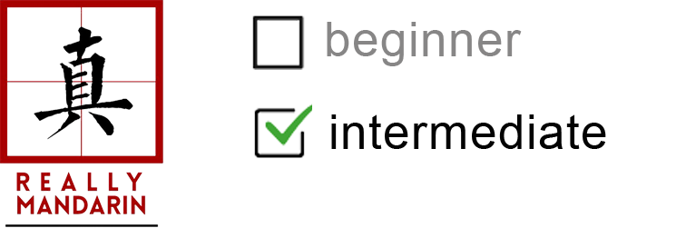
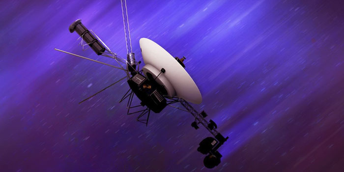

13 - “旅行者1号”离地球一光日
Voyager 1 Is One Light-Day from Earth

2026年11月18日，“旅行者1号”飞到了一个很远的地方，那一天，它离地球一光日。如果你现在对着天空叫一声“你好”，这个信号以光的速度发过去，要走24小时，“旅行者1号”才能收到。
49年前，“旅行者1号”从地球发射，它飞近了木星和土星，拍了许多照片，这些照片让科学家们更了解太空。因为它经过了这两颗大行星，“旅行者1号”的速度变得更快了，它飞向了更远的地方。1990年，“旅行者1号”的任务将要结束，它的相机很快就会关闭。科学家卡尔·萨根建议让“旅行者1号”最后一次回头，给地球拍一张照片。于是就有了那张著名的照片——"淡淡的蓝点"。在“旅行者1号”的眼睛里，地球只是太空中的一个蓝色小点。
"再看看那个光点，它就在这里。那是我们的家园，我们的一切。"
“旅行者1号”飞船上，带着一张金唱片。里面有115张图像、55种语言的问候、27首歌，还有风声雨声雷声……人类把自己的文明写进了这张金唱片，让“旅行者1号”交给了宇宙。
“旅行者1号”带着人类的好奇心，一直飞，永远不回家。